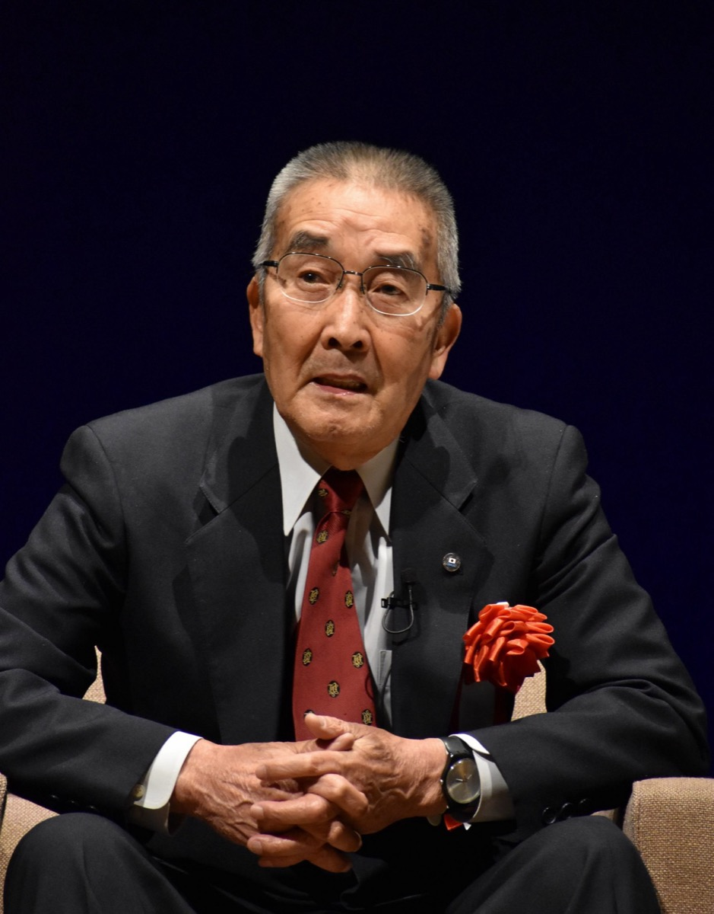
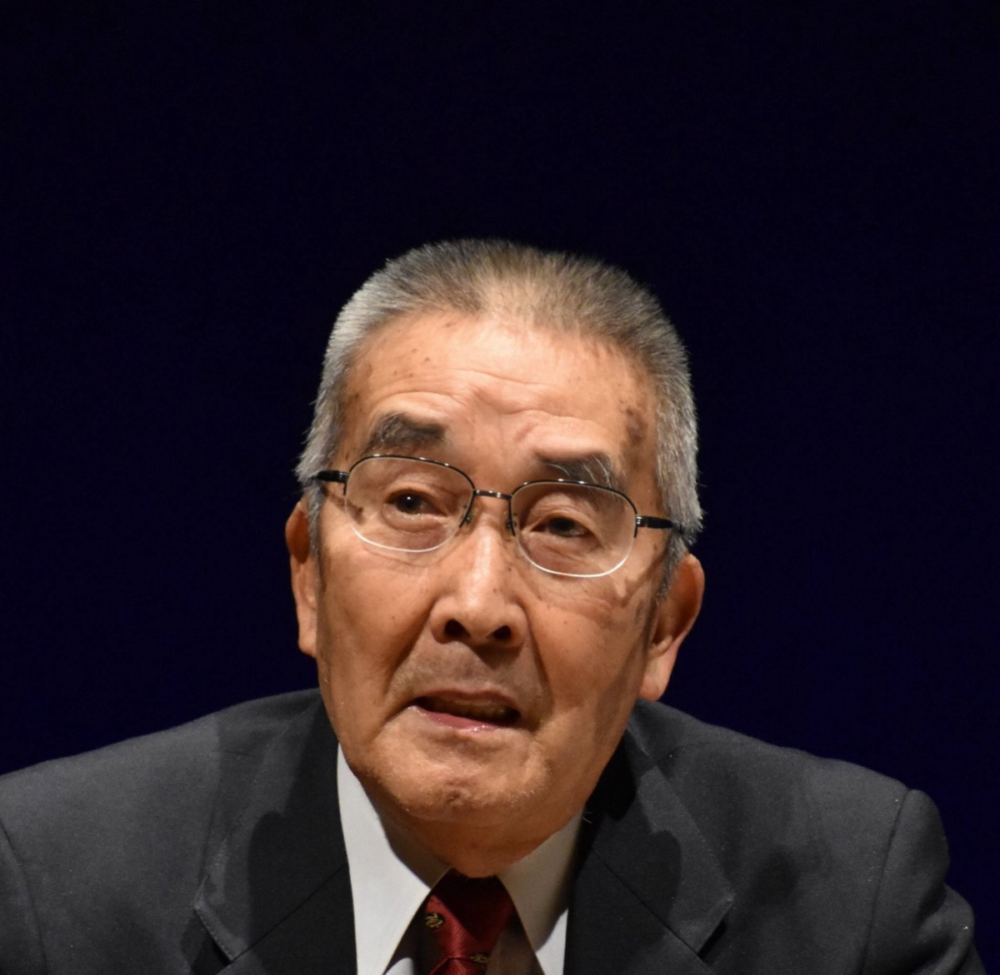
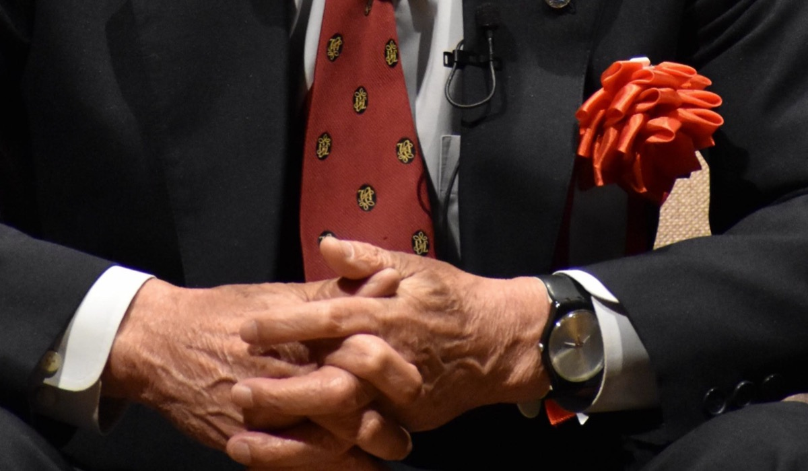
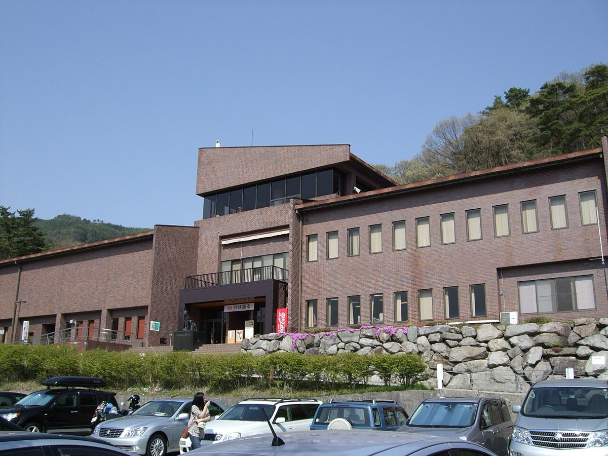

home / people / 神崎忠男
神崎忠男 — 4度のエベレストと山岳組織の運営
Tadao Kanzaki 1940.5.1 – ／登山家・日本山岳協会第10代会長
登山 エベレスト 日本山岳会
日本山岳協会 UIAA ルート工作
1940年東京都生まれ。エベレスト遠征は1970・1980・1988・1995年の4回で、本人の登頂は0回である。1970年は東南稜のルート工作側に入り、滑落後も無傷だったがアタック枠には入らなかった。1980年は約6,500 mで急性心筋梗塞を発症した。のちに日本山岳協会第10代会長（2011–2015年）、UIAA日本代表を20年以上務めた。本ページは未登頂を悲劇譚ではなく、配置結果と役職経路という観測可能な変数で読む。因果の確定に足りない文書は判定不能とする。
改稿日 2026年11月11日（初稿 2026年9月26日）。存命の人物であるため、出典のない私生活・人物評は書かない。同名別人（神崎忠彦＝大分県商工労働部長、神崎茂治＝ノーリツ、神崎将臣＝漫画家）とは別人物である。生年月日は公開二次資料が1940年5月1日と記す。朝日新聞が2020年5月11日付で「80歳」と書いた表記とも整合する。戸籍等の一次確認は未了。所属団体では「神﨑忠男」表記も用いる。年表の満年齢は生年月日1940年5月1日からの年差で算出している。
① 概要Overview
先に結論を置く。
1. 1970年の未登頂は、滑落による身体不能ではない。組織設計が原因かは判定不能である。 Himalayan Journal は1970年4月20日、ローツェ・フェース約7,200 mで平林克敏の下山中に神崎も滑落し、岩角で確保されて負傷なしと記す31 31 12 3
2. 会長就任の主因が国際窓口の連続勤務だったかは、判定不能である。 観測できるのは、登頂0回のまま国際部常務理事（約10年）→副会長→第10代会長へ進んだ前後関係と、UIAAが表彰根拠に出席20年以上を挙げたことまでである。選任理由書は未取得である6 7 5
3. 1988年と1995年の未登頂を、個人アタックの失敗として分類することは、公開記録と両立しない。 記録上の役割は今西壽雄総隊長のベースキャンプ随行（1988年・講演記録）と、隊長としての Basecamp Only（1995年）である。アタック割当の記載は無い。役割定義が未登頂の原因だったかは、決定文書が未取得のため判定しない2 4 18
主張
読者と判断： 遠征の人員配置と山岳団体の役員人事を読むとき、次を切り分けられる。第一に、未登頂が負傷による除外か配置の結果かを名簿と身体状態でどこまで言えるか。第二に、会長就任の主因を登頂実績と国際窓口のどちらに置くかを、選任理由書が無い状態でどこまで言えるか。第三に、後期遠征の未登頂をアタック失敗として分類できるかを、公開記録の役職表記で検証できる。
主張： 1970年の本人未登頂は、滑落による身体不能ではなく、東南稜チーム内でルート工作・荷上げとアタック枠が分離された組織設計の結果である。 反証条件： アタック選定文書が滑落による離脱を理由に記す場合。または一次記録が滑落による負傷・下山強制を記す場合。 判定： 判定不能（HJは約7,200 mの滑落後に free from injury と明記し、第1〜4次アタック名簿に神崎は無い。負傷除外説は棄却できる。しかし選定理由・隊長決裁が未取得のため、組織設計が原因だとする因果までは確定できない。31 32 主張： 本人が日山協会長に至った主因は、エベレスト登頂ではなく、国際部常務理事とUIAA連続出席という国際窓口の連続勤務である。 反証条件： 選任理由書が登頂実績または国際窓口以外の要因を主因と記す場合。または国際部・UIAA経験が選任時点で無い場合。 判定： 判定不能（国際部→副会長→会長の前後関係と、UIAA表彰記事が根拠に出席20年以上を挙げたことは確認できる。主因が国際窓口だったかは、選任理由書と評議員発言録が未取得のため確定できない。6 7 5 主張： 1988年と1995年について、公開記録は本人を頂上アタック班に置いていない。したがって、これらの未登頂を個人アタックの失敗として分類することは、公開記録と両立しない。 反証条件： 1988年または1995年の一次記録が、本人を頂上アタック班に割当していたと記す場合。 判定： 支持（多摩支部講演は1988年を今西随行と記し、HJと Himalayan Database は1995年を隊長・Basecamp Only と記す。アタック割当の記載は無い。役割定義が未登頂の原因だったかという因果は、決定文書が未取得のため本主張の対象外とする。2 4 18
分解： 物理的制約は酸素供給・天候窓・クーンブ氷瀑とローツェ・フェースの固定ロープ工数である。お金の流れは遠征予算・報道枠・協会会費である。利得の帰属は登頂者・シェルパ・協会役員・報道に分かれる。法と強制力はネパール／中国の許可と隊長の人員配置権限である。時間は天候窓の日数に対するルート工作と荷上げの所要である。

2021年12月5日、長野県大町市の大町山岳博物館70周年事業で登壇する神崎忠男。Commonsの説明は「日本初エベレスト隊員として大町山岳博物館７０周年で登壇する神崎」とする。1970年隊の隊員本人であり、遠征経験を公の場で語る役職活動の現場である。写真：Kyo24111 ／CC0／Wikimedia Commons


同一の登壇写真からの切り出し。左は発話中の表情。右は橙の徽章とピンマイク、および組んだ手であり、招待講演の役職活動であることを示す。Commons上の本人写真はこの1点のみである。写真：Kyo24111 ／CC0／Wikimedia Commons
② 年表Timeline 日付が公開資料で確定した出来事だけを並べた。各項目は事実、具体、なぜ効いたかの3層である。期のボタンで絞り込める。日付の右は、その時点の満年齢である。
該当する項目がない。
③ 局面ごとの解剖Phases 見出しと主張の対応は次のとおりである。I は分解の前提。II は主張1の検証。III は主張3の検証。IV は主張2の検証。V は利得の帰属である。
I 前提 — 物理制約と隊の二分割（1966–1970春）
日本大学山岳部出身。1966年の日大第2次グリーンランド隊で Mount Forel（11,025 ft）第二登などに参加した9 10 12 11
HJは4月17日に南西壁チームと東南稜チームの分割を発表したと書く。東南稜チームは松浦をリーダーとし、神崎（T. Kanzaki）と植村を含む。この段階の優先は、早期の頂上アタックに向けたローツェ・フェースのルート開拓と荷上げである31
II 主張1の検証 — 1970年・無傷でもアタック枠外
検証は2点である。(1) 滑落後の身体状態。(2) アタック名簿の有無。
(1) HJは1970年4月20日14時の出来事を次のように記す。約7,200 mのローツェ・フェースで、下山中の平林とともに神崎が滑落した。岩角で確保され、負傷なし（free from injury）である31 2
(2) 同記録は東南稜からの頂上アタックを2回とし、第1次を松浦・植村、第2次を「隊員1名とシェルパ1名」と割当する。実行では第2次が平林・チョタレ、のちに第3次田村・イラ・ツェリン、第4次小西・フェンジョが計画された。神崎はこれらの枠に入っていない31 32 3
したがって、反証条件のうち「滑落による負傷・下山強制」は満たされない。負傷除外説は棄却できる。確認できるのは無傷とアタック名簿外という配置結果までである。ルート工作とアタック枠の分離が原因だとする因果は、選定理由・隊長決裁が未取得のため判定不能とする。
III 主張3の検証 — 1988・1995年をアタック失敗と分類できるか
主張1は1970年に限る。1980年以降の未登頂は別変数である。主張3の検証対象は、1988年と1995年の公開記録における役職表記とアタック割当の有無である。役割定義が未登頂の原因だったかという因果は、ここでは判定しない。
1980年（身体。主張3の対象外）。 日本山岳会チョモランマ隊。AACは隊長を渡辺兵力とし、5月3日に加藤保男が北東稜から、5月10日に重廣恒夫・尾崎隆が北壁から登頂したと記す。北壁では宇部晃が雪崩で死亡した14 2
1988年（役割表記）。 三国友好登山で、本人が語った役割は今西壽雄総隊長のベースキャンプ随行である（講演記録・single-source）。交差縦走と頂上中継は5月5日に成功した。公開記録に本人のアタック割当は無い2 16 17
1995年（指揮位置）。 日大北東稜隊の登山隊長として Basecamp Only。古野潔・井本茂樹らが5月11日に完登。Himalayan Database と池田報告が一致する。アタック割当の記載は無い4 18
反証条件の「アタック班への割当」は、公開の一次記録では満たされない。確認できるのはベースキャンプ側の役割表記と、アタック割当の不在までである。したがって、これらの未登頂を個人アタックの失敗として分類する読みは、公開記録と両立しない。役割定義が未登頂を引き起こしたかという因果を判定するには、割当決定の会議録・指示書が必要である（未取得）。
IV 主張2の検証 — 会長就任の主因は国際窓口か
検証は3点である。(1) 登頂実績の有無。(2) 国際窓口の連続勤務の有無。(3) 主因命題を確定できる文書の有無。
(1) 本人のエベレスト登頂は0回である。タウンニュース・UIAA・Himalayan Databaseが一致する。登頂が主因である読みは、この一点だけでは棄却できないが、必要条件としては成立しない1 5 18
(2) 『登山月報』507号の就任挨拶で本人は次のように書く。1986年から1995年頃まで約10年間常務理事（国際部）だった。直前2年間は副会長だった。2011年5月15日前後に第10代会長へ就任し、2015年まで在任した。後任は八木原圀明である。JMSCA公式の歴代会長表と一致する6 7 5
(3) 公式の歴代会長ページは在任年と氏名のみを掲げ、選任理由を書かない7 6
したがって、反証条件のうち「国際部・UIAA経験が選任時点で無い」は満たされない。確認できるのは前後関係と表彰根拠までである。主因が国際窓口だったかという因果は、選任理由書と評議員発言録が未取得のため判定不能とする。

長野県大町市の大町山岳博物館（2009年5月2日撮影）。Commonsの本人登壇写真（2021年12月5日）が会場として記す同一施設である。遠征隊の実物写真はCommons上で確認できていないため、公開されている役職活動の会場を置く。写真：Uryah ／CC BY-SA 3.0／Wikimedia Commons
V 利得の帰属 — 誰が得をしたか
1970年の配置では、登頂の名声は松浦・植村・平林・チョタレに帰属し、ルート工作と荷上げの工数は神崎を含む東南稜チームとシェルパに帰属した。協会と報道は日本人初登頂の物語を得る。1980年以降、本人は国際部・UIAA・日山協会長・HAT-Jの役職を歴任した（在任の事実）。これらの役職が登頂に代わる利得だったかは、選任理由書と本人の損益記録が無いため判定しない。シェルパと荷上げ労働の分配は、公開の遠征予算表が薄いため定量化できない（残課題）。
④ 実績の数字The Numbers 登山家としての数字は、遠征回数・到達の成否・組織役職の在任に限る。個人資産・会社売上は Himalayan Database の職業表記以外を追えない。
エベレスト4遠征における本人の到達結果
縦軸は本人の山頂到達の有無（0/1）。隊の成否とは別
出典1・2・4・5・18・31。1988年の本人最高到達点はN/A。
関与したエベレスト隊の登頂人数（隊全体）
単位は人。本人を含まない登頂者数
1970=4、1980=3（加藤・重廣・尾崎）、1995は古野・井本＋シェルパ。1988の日本側登頂人数の一次集計は残課題。
⑤ 失敗の解剖Failures 未登頂を「悲劇」一語でまとめない。主張1・2・3の判定に必要な類型だけを置く。
類型A: 工程分離 — 1970年（主張1）
東南稜チームに入り、滑落後も無傷だったが、第1〜4次アタック名簿に無い。負傷除外説は棄却できる。ルート工作とアタックの分離が原因だとする因果は、選定文書が無いため判定不能である31 3 12
類型B: 身体イベント — 1980年
約6,500 mの急性心筋梗塞（single-source・講演記録）。隊は北東稜・北壁で登頂を完了した。本人の山頂アタックは記録に無い2 14
類型C: 役割表記 — 1988年・1995年（主張3）
1988年は総隊長随行、1995年は隊長としてBC。公開記録にアタック割当は無い。主張3は、これらを個人アタックの失敗として分類できない、という点を支持する。役割定義が未登頂の原因だったかは判定しない2 18 1 5
欠落データ。 次の項目は公開Webでは揃っていない。1970年アタック選定の会議録・投票・隊長決裁の全文。1980年心筋梗塞の発症日と搬送ログ。1988年の本人最高到達点。遠征予算の分担表。日山協の役員選任理由書。
⑥ 思想と方法Thought and Method 2011年の会長就任挨拶は、登山の多様化と高齢化を前提に、都道府県岳連との連携と他団体との交流を軸に置いた。国際部経験を「一時代前」「実績にはなりません」と自己限定し、未知を体制づくりのばねにすると書いた6
タウンニュース取材で、なぜ山に登るかを問われ、「”山があるから”という有名な言葉があるが、言葉で表現できない」と答えた1
⑦ 語録Quotes 主張の検証に必要な発言に限った。日付と出典が特定できるものだけを置く。
⑧ 誰が得をするか / 残っている問い / 出典Winners / Open Questions / Sources 誰が得をするか
1970年の登頂名声はアタック名簿側に帰属し、ルート工作の工数は神崎を含む工作側とシェルパに帰属した。協会・報道は日本人初登頂の物語を得る。本人はその後、国際部・UIAA・日山協会長などの役職を歴任した。選任理由書が無いため、協会内部で「誰の推薦が決定的だったか」と、役職が本人の利得であったかは確定できない。
残っている問い
1970年のアタック選定会議は、無傷のルート工作隊員をどう評価したか。 名簿上の結果は確定した。選定理由の文書（体力・経験・隊内序列・滑落歴の扱い）は未取得である。日山協の2011年会長選任で、国際窓口の連続性はどの程度明示されたか。 経路は観測できる。選任理由書と評議員の発言録は公開資料に無い。遠征予算とスポンサー分担は、登頂者とルート工作側でどう配分されたか。 公開の分担表が薄い。1970・1980・1988・1995年隊の実物写真と名簿原本は、どこに残っているか。 Commons上では本人の登壇写真1点と、その会場である大町山岳博物館の外観以外を確認できていない。
タウンニュース多摩版「開設1周年を迎えた日本山岳会東京多摩支部の『多摩サロン』を主宰する 神崎 忠男さん」（2016-04-21。「悲劇の登山家」と自分で言う、4回未登頂） — https://www.townnews.co.jp/0306/2016/04/21/329006.html
日本山岳会東京多摩支部「講演会『エベレスト登山』」（2010-05-10。滑落の記録。1980年の約6,500 m心筋梗塞。1988年の今西随行。1995年の日大隊長） — http://jacttm.parasite.jp/oldarchive/event/100510kouenkai.html
朝日新聞「特別だったエベレスト 植村氏登頂から半世紀、今や渋滞」（2020-05-11。前進BC 6,450 mで9:10の無線、神崎80歳） — https://www.asahi.com/articles/ASN5C3469N56UTQP00D.html
Kaneshige Ikeda, “The Northeast Ridge of Everest,” Himalayan Journal 52（1995年日大隊。隊長 Tadao Kanzaki、5月11日登頂） — https://www.himalayanclub.org/hj/52/2/the-northeast-ridge-of-everest/
UIAA “Honouring Japanese mountaineers”（2007-10-10。tragic mountain climber の自称、UIAA 20年以上、UAAA 1994） — https://www.theuiaa.org/honouring-japanese-mountaineers/
公益社団法人日本山岳・スポーツクライミング協会『登山月報』第507号（2011-06-15。会長就任挨拶全文、プロフィール） — https://www.jma-sangaku.or.jp/wp-content/uploads/2022/04/507%E5%8F%B7%EF%BC%88%E5%B9%B3%E6%88%9023%E5%B9%B46%E6%9C%8815%E6%97%A5%E7%99%BA%E8%A1%8C%EF%BC%89.pdf
JMSCA「歴代会長」（第十代 2011–2015 神﨑忠男） — https://www.jma-sangaku.or.jp/about/society/chairman/
Wikipedia「神崎忠男」（生年月日1940-05-01。二次。一次と突合して使用） — https://ja.wikipedia.org/wiki/%E7%A5%9E%E5%B4%8E%E5%BF%A0%E7%94%B7
Ichiro Yoshizawa, “North America, Greenland, Mount Forel,” American Alpine Journal 1967 — https://publications.americanalpineclub.org/articles/12196737800/North-America-Greenland-Mount-Forel
日本大学山岳部「History」（第2次グリーンランド1966、エベレスト北東稜1995） — https://nualpine.com/history
京都大学研究資源アーカイブ「1970年 日本山岳会エベレスト登山隊」 — https://keep.rra.museum.kyoto-u.ac.jp/repositories/2/archival_objects/17780
“Asia, Nepal, Mount Everest, Fifth Ascent,” American Alpine Journal 1971 — https://publications.americanalpineclub.org/articles/12197143300/Asia-Nepal-Mount-Everest-Fifth-Ascent
Wikipedia「1970年のエベレスト遭難事故」（スキー隊とJAC本隊の別件整理） — https://ja.wikipedia.org/wiki/1970%E5%B9%B4%E3%81%AE%E3%82%A8%E3%83%99%E3%83%AC%E3%82%B9%E3%83%88%E9%81%AD%E9%9B%A3%E4%BA%8B%E6%95%85
Sadao Tambe, “Asia, China, Mount Everest (Qomolungma), Northeast Ridge and North Face,” AAJ 1981 — https://publications.americanalpineclub.org/articles/12198130500/Asia-China-Mount-Everest-Qomolungma-Northeast-Ridge-and-North-Face
京都大学研究資源アーカイブ「1980年 日本山岳会チョモランマ登山隊」 — https://keep.rra.museum.kyoto-u.ac.jp/repositories/2/archival_objects/17793
放送ライブラリー「チョモランマがそこにある～みんなが頂上に立った～」（1988-05-05） — https://www.bpcj.or.jp/program/detail/003169/
今西壽雄オフィシャル「世界初 マナスル ヒマラヤに立つ」（1988三国友好登山・日本側総隊長） — http://toshio.imanishigumi.co.jp/history.html
Himalayan Database相当 “Everest 1995 | NE Ridge (EVER95102)”（Leader Tadao Kanzaki, Basecamp Only） — https://himalayan-database.climbing-history.org/expedition/EVER95102/1995
日本山岳協会『登山月報』第561号（2015-12-15。UIAA総会出席に神﨑顧問） — https://www.jma-sangaku.or.jp/wp-content/uploads/2022/04/561%E5%8F%B7%EF%BC%88%E5%B9%B3%E6%88%9027%E5%B9%B412%E6%9C%8815%E6%97%A5%E7%99%BA%E8%A1%8C%EF%BC%89.pdf
産経ニュース「山とともに生きた生涯…三浦雄一郎さん『元気もらった。ありがとう』」（2016-10-23。HAT-J会長継承2016-05） — https://www.sankei.com/article/20161023-VDSFBWEXFBMHPAJRBHBODJNQYI/
HAT-J関連告知（2021-09-30解散） — http://hanashima.xsrv.jp/bookstore/hatj.htm
日本山岳会東京多摩支部「第33回 立川サロン『エベレストから高尾山まで』」（2025-12-21案内） — https://jac.tokyo/archives/18860
新ハイキングクラブ「お山の教室 第120回」（2022-06-14） — https://shinhai.net/class_mountain/120.html
日本山岳会東京多摩支部「北極圏グリーンランド登山隊 1966年の記録」（2014-01-26） — http://jacttm.parasite.jp/oldarchive/event/140126kouenkai.html
公益社団法人日本山岳会越後支部「神﨑忠男氏講演会」チラシ（2019-12-14） — https://niigata-ksk.sakura.ne.jp/files/docs/%E6%B5%B7%E5%A4%96%E7%99%BB%E5%B1%B1%E3%82%BB%E3%83%9F%E3%83%8A%E3%83%BC%EF%BC%88%E9%96%8B%E5%82%AC%E3%83%81%E3%83%A9%E3%82%B7%EF%BC%89.pdf
全国山の日協議会「登山愛好者からの盛り上げを一緒に考えよう」（2023-05-23） — https://www.yamanohi.net/report.php?id=2753
放送ライブラリー「生と死に賭けた36時間！ これがチョモランマだ」（1980-11-15放送） — https://www.bpcj.or.jp/program/detail/001658/
炉辺会「明治大学山岳部及び炉辺会の海外登山記録」（1980年JACチョモランマ隊） — https://robatakai.com/mac_chronicle/
NPO法人日本ヒマラヤン・アドベンチャー・トラスト『30年のあゆみ』（発足1990-10-16） — http://hat-j.jp/HAT-J/30Wnen.pdf
Weblio辞書「神崎忠男」（経歴年表の二次要約） — https://www.weblio.jp/content/%E7%A5%9E%E5%B4%8E%E5%BF%A0%E7%94%B7
Hiromi Ohtsuka, “The Japanese Mount Everest Expedition, 1969-1970,” Himalayan Journal 31（4月17日チーム分割、4月20日約7,200 m滑落・無傷、アタック割当） — https://www.himalayanclub.org/hj/31/8/the-japanese-mount-everest-expedition-1969-1970
日本山岳会 “THE JAPANESE MOUNT EVEREST EXPEDITION 1969-1970”（HJと同内容のPDF。Matsuura and Uemura assigned for the first summit assault） — https://jac1.or.jp/images/media/everest-1-1-5.pdf